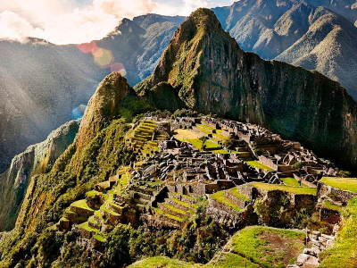
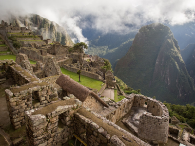

Machu Picchu

Machu Picchu, the ancient Inca city nestled high in the Peruvian Andes, is one of the most awe-inspiring archaeological sites in the world. Surrounded by mist-covered mountains, this UNESCO World Heritage site offers stunning views and a glimpse into the advanced engineering and culture of the Inca civilization. Whether you're hiking the Inca Trail or exploring the ruins, you'll be captivated by the precision of its stone structures and the mystery that still surrounds its purpose. A visit to Machu Picchu is a once-in-a-lifetime experience, blending history, adventure, and natural beauty in one unforgettable journey.
Beyond words! ⭐️⭐️⭐️⭐️⭐️
"Machu Picchu is beyond words—it’s a place you have to see to believe! The journey to get there, whether by train or hiking the Inca Trail, adds to the magic of the experience. The ancient ruins, set against the backdrop of the lush Andes mountains, are absolutely breathtaking. I recommend arriving early to watch the morning mist lift, revealing the site in all its glory. Exploring the terraces, temples, and stone structures was like stepping back in time. It’s truly a bucket-list destination and worth every effort to visit!"
- Charlotte Stoker
A stunning challenge ⭐️⭐️⭐️⭐️
"The views and history of Machu Picchu are stunning, but the experience can be a bit challenging. I visited during the peak season, and while the site itself is incredible, the crowds made some areas feel congested. The steep paths can be tough to navigate, so wear sturdy shoes and be prepared for a workout. The surrounding landscape is spectacular, especially from the Sun Gate, so it’s worth the extra hike. Despite the crowds, it’s a fascinating glimpse into the Inca civilization and a must-see for history and nature lovers alike."
- Anonymous
Awe-inspiring ⭐️⭐️⭐️⭐️⭐️
"One of the most awe-inspiring places I’ve ever been! Machu Picchu feels like a hidden world above the clouds, with its breathtaking scenery and incredible stonework. The guides do an excellent job of bringing the history to life, explaining the significance of each area and the ingenuity of the Inca people. I also climbed Huayna Picchu, which offered unparalleled views of the site from above—challenging but so worth it! Visiting Machu Picchu was an unforgettable adventure and a highlight of my travels in South America."
- Bailey Snowden
Recommended journey

Full Day Tour to Machu Picchu from Debra Mortimer
From £268.89 per adult
Check availability